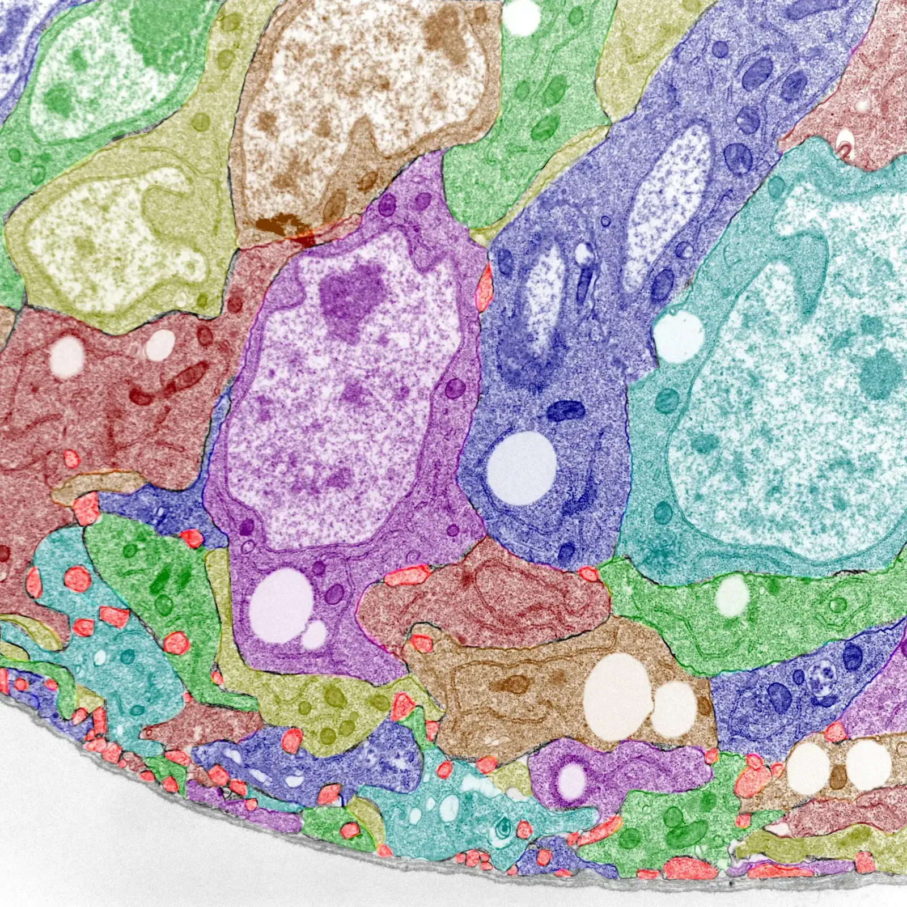
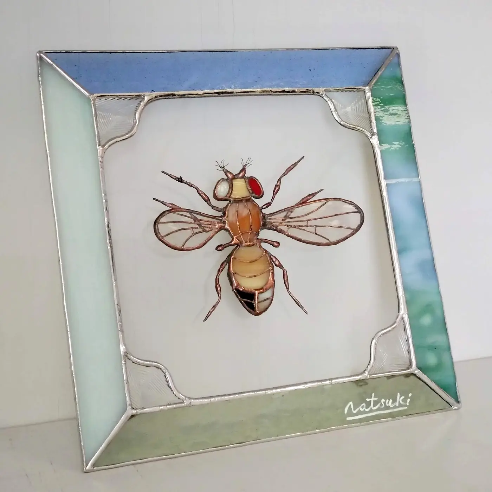

How cells organize, adapt, and evolve.
We use Drosophila genetics and quantitative imaging to investigate how genome organization, cellular states, and tissue environments shape cell behavior.
Our perspective
Cells are shaped by both their genomes and the tissues they inhabit. The Tamori Lab studies how cells respond when genomes are amplified, tissue architecture is challenged, or local environments change. By combining genetic models with high-resolution imaging, we connect chromosome-scale organization to cell behavior and tissue-level outcomes.
Explore our researchResearch themes
From amplified genomes to tissue behavior.
Three connected questions guide our work across cell and tissue scales.
Managing Amplified Genomes
How polyploid cells organize their genomes, transition between cellular states, and adapt to stress.
02 / INVASIONTumor Invasion & Cellular Heterogeneity
How tissue environments and dynamic cell states shape collective tumor invasion.
03 / REPAIRHomeostasis & Tissue Repair
How cell competition, compensatory growth, and polyploidization maintain tissue integrity.
Latest news
From the lab.
Join the lab
Curious about cell states in living tissues?
We welcome inquiries from prospective graduate students and undergraduates interested in genetics, imaging, polyploidy, and tissue biology.
